Overview
This assignment investigates how linear principal component analysis (PCA) and nonlinear ISOMAP reduce dimensionality, preserve information, and reveal the structure of the Iris dataset. It includes a complete manual PCA example, numerical verification, species visualizations, and reproducible Python code.
Preprocessing
For Parts 2–5, the original Iris measurements are used in centimetres. PCA automatically mean-centers these features; their variances are not z-score standardized. The three species labels are used only to color visualizations and evaluate cluster separation.
Dimensionality reduction
Parts 3 and 4 use the same four-dimensional PCA fit. In Part 5, both PCA and ISOMAP produce two-dimensional representations from the same original Iris data, and ISOMAP is fitted with exactly three nearest neighbors.
sklearn.datasets.load_iris). The assignment's hand-calculation dataset is shown separately in Part 1.First principal component and reconstruction errors
Five observations with two features each lie on a straight line. The goal is to determine the unit-length direction that minimizes orthogonal projection error, then reconstruct two new points using PC1.
Given dataset
| Observation | x₁ | x₂ |
|---|---|---|
| 1 | −2 | −1 |
| 2 | −1 | 0 |
| 3 | 0 | 1 |
| 4 | 1 | 2 |
| 5 | 2 | 3 |
Center the observations
The mean is (0, 1). Subtracting the mean gives coordinates (−2, −2), (−1, −1), (0, 0), (1, 1), (2, 2).
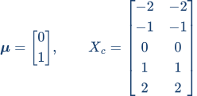
Question 1 · Find PC1
Form the sample covariance matrix and solve its eigenvalue problem:
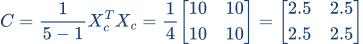
For the largest eigenvalue, , solving gives . Normalizing the direction (1, 1) yields:
Questions 2 and 3 · Reconstruct using PC1
For a new point , center it, project onto PC1, reconstruct in centered coordinates, then restore the original mean:
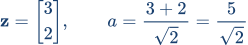
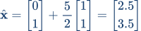
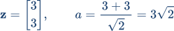
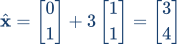
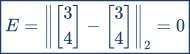
Marginalizing the Iris dataset
The Iris data contain 150 observations in three classes (50 per species) and four measurements: sepal length, sepal width, petal length, and petal width. Marginalizing here means projecting onto selected original feature axes; PCA has not yet been applied.
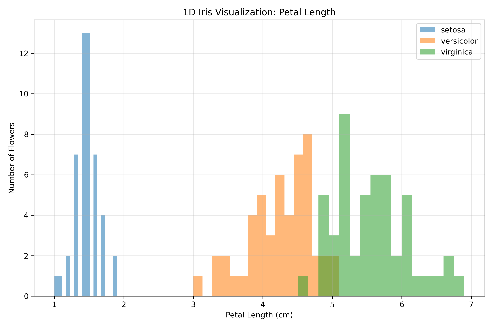
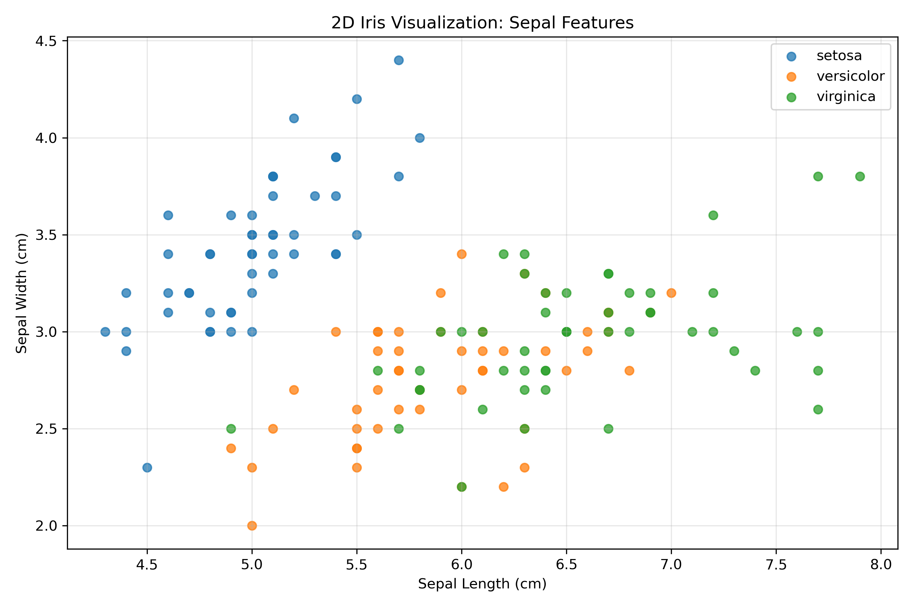
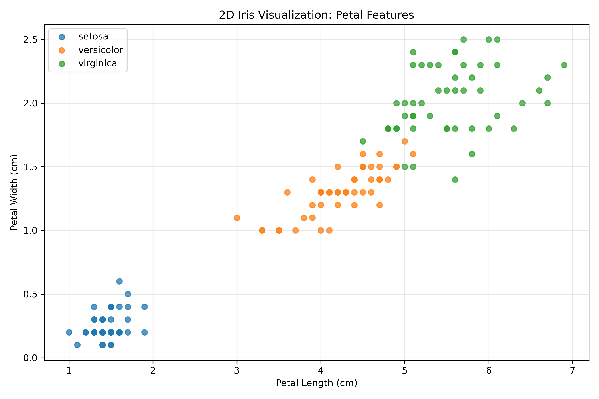
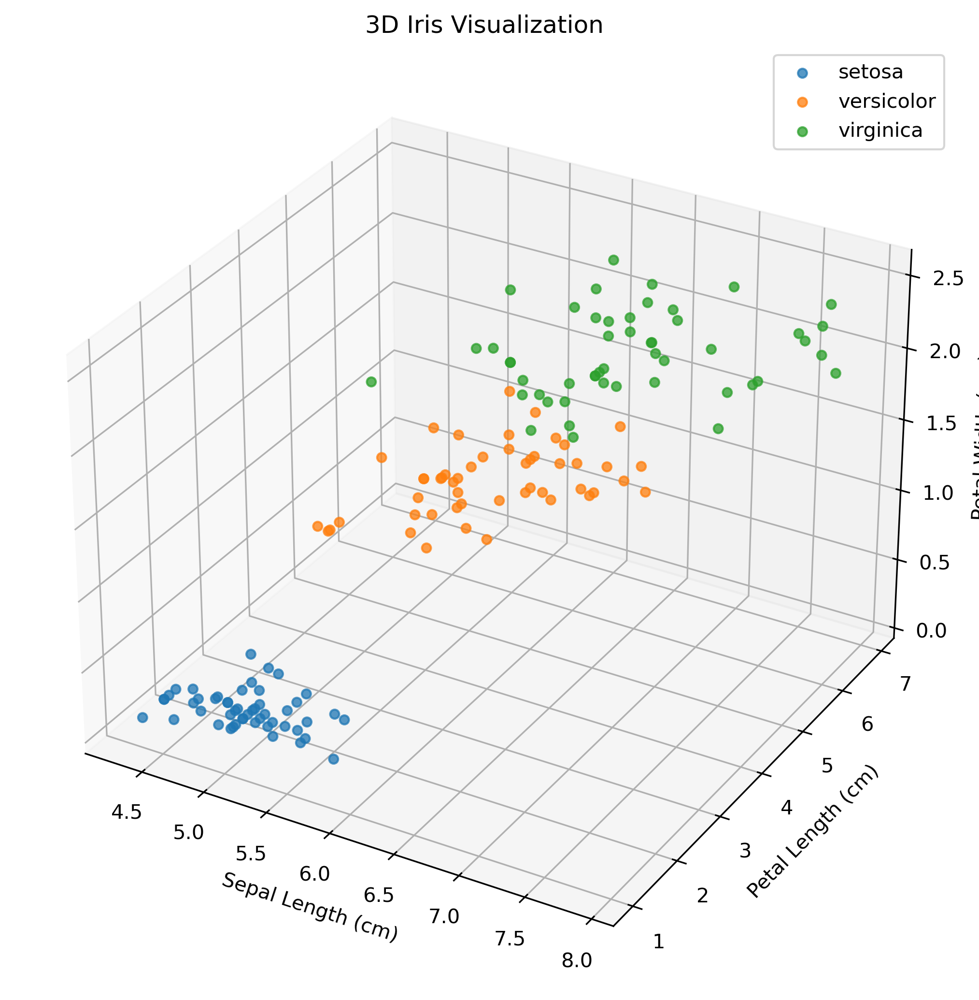
| Projection | Setosa | Versicolor / Virginica |
|---|---|---|
| 1D petal length | Clearly separated | Partially overlapping |
| 2D sepal features | Only partial separation | Strong overlap |
| 2D petal features | Clearly separated | Mostly distinct; some overlap |
| 3D selected features | Clearly separated | Mostly distinct; some overlap |
New axes learned from Iris measurements
Using sklearn.decomposition.PCA(n_components=4), the original four-feature dataset is mean-centered, not z-score standardized. PCA finds orthogonal unit-length directions of decreasing variance. The projected scores are visualized on PC1, PCs 1–2, and PCs 1–3.
Learned principal-component axis vectors
Each column below is a unit-length principal-component vector expressed in the original four-feature coordinate system. The sign of any entire PCA axis may be reversed without changing the solution.
| Original feature | PC1 | PC2 | PC3 | PC4 |
|---|---|---|---|---|
| Sepal length | +0.361387 | +0.656589 | −0.582030 | +0.315487 |
| Sepal width | −0.084523 | +0.730161 | +0.597911 | −0.319723 |
| Petal length | +0.856671 | −0.173373 | +0.076236 | −0.479839 |
| Petal width | +0.358289 | −0.075481 | +0.545831 | +0.753657 |
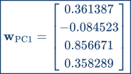
Visualizing the first one, two, and three PCA axes
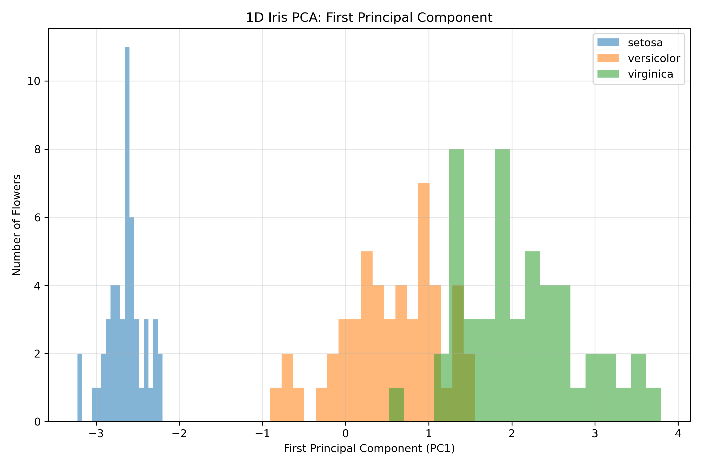
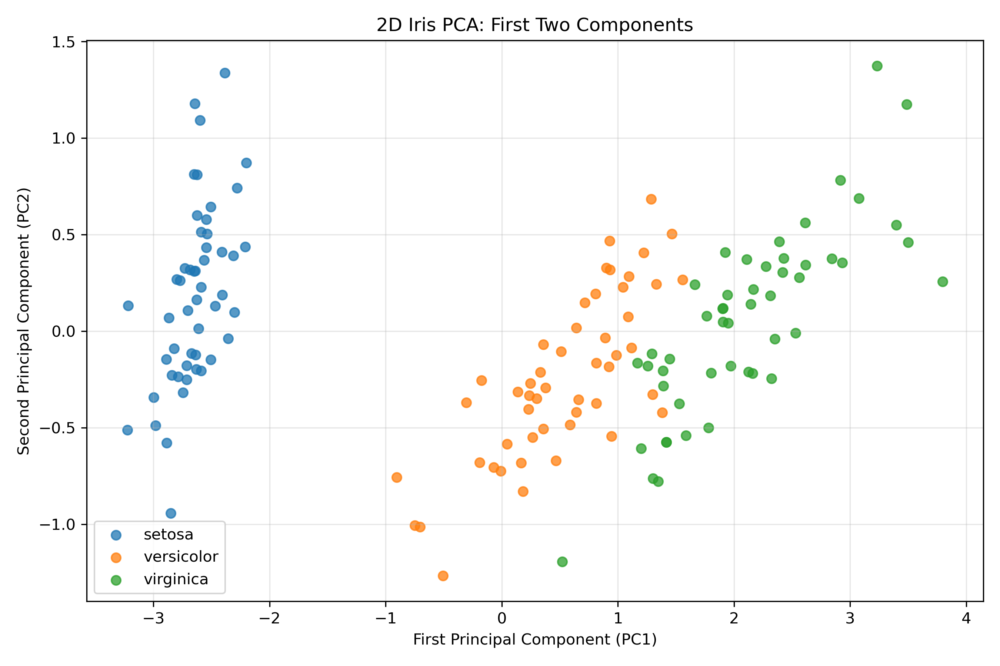
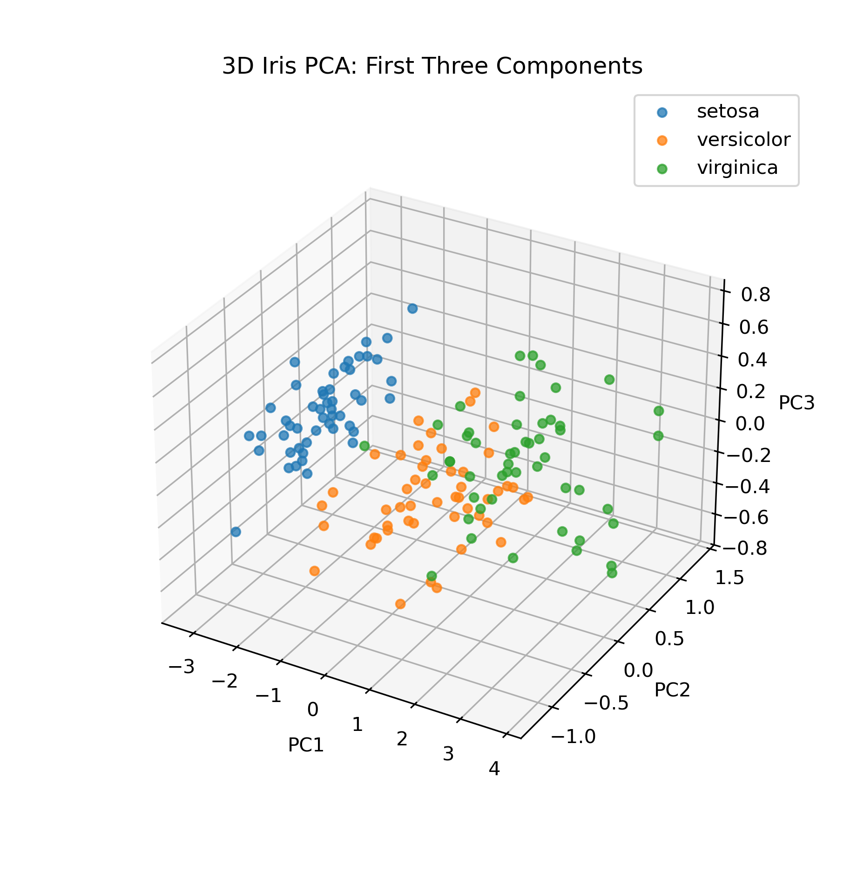
How much information does PCA retain?
The assignment asks how much variance is retained by the 2D PCA representation and how many principal components suffice to explain at least 50% of total variance.
| Principal component | Individual explained variance | Cumulative variance |
|---|---|---|
| PC1 | 92.4619% | 92.4619% |
| PC2 | 5.3066% | 97.7685% |
| PC3 | 1.7103% | 99.4788% |
| PC4 | 0.5212% | 100.0000% |
Question 1 · Explained variance of 2D PCA
The connection to the Frobenius norm is particularly useful. The total centered-data sum of squares equals the sum of the squared PCA scores over all components; the first two projected axes retain the following fraction:
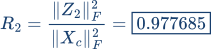
Question 2 · Minimum PCs to explain 50%
ISOMAP with 3 nearest neighbors
Unlike PCA, ISOMAP builds a local neighborhood graph and approximates geodesic distances using shortest paths through that graph. It then embeds the data in a lower-dimensional Euclidean space. For direct comparison with Part 3, both methods here use two output dimensions and the same original four Iris measurements.
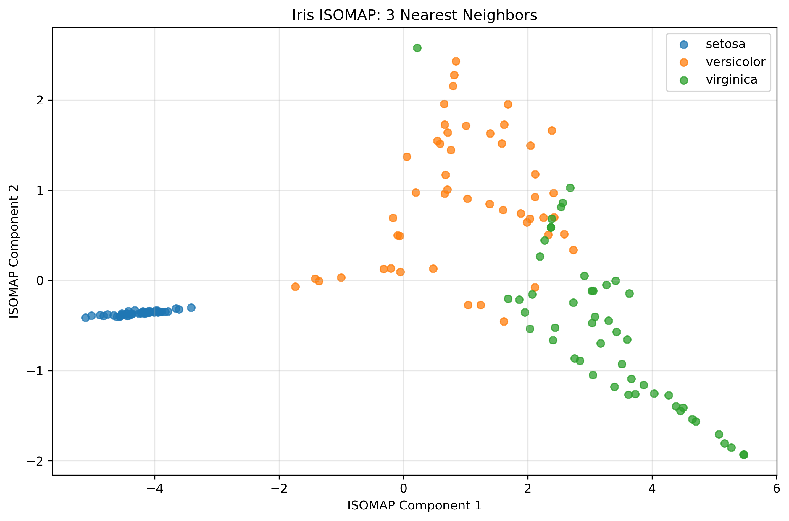
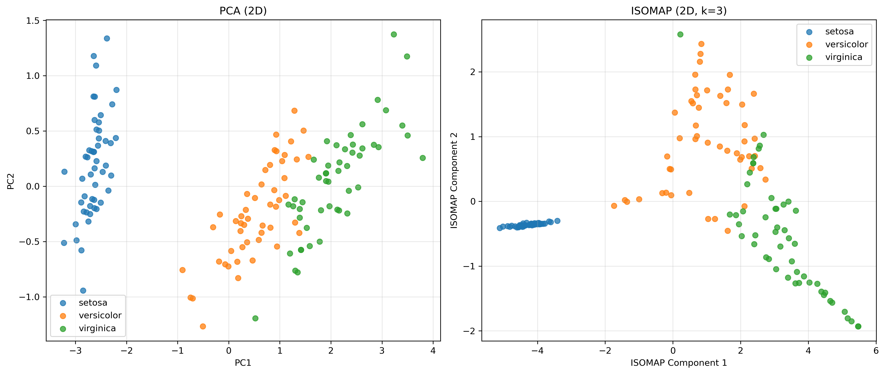
Evaluation using known species labels
Two label-based measures are computed after embedding; the species labels are not used to fit either PCA or ISOMAP. The silhouette score assesses the separation and compactness of the species groups. As a direct classification check, a 5-nearest-neighbor classifier is trained on each 2D embedding and scored with 10-fold cross-validation (both embeddings are fitted once on all 150 samples without labels; only the classifier is cross-validated).
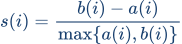
| 2D method | Silhouette score | 5-NN CV accuracy | Compression / caveat |
|---|---|---|---|
| PCA | 0.534393 | 96.00% | 97.7685% original variance retained |
| ISOMAP (k = 3) | 0.559967 | 91.33% | No directly comparable explained-variance measure; graph had to be completed |
Which is preferable?
For visual species separation, ISOMAP has a slightly higher silhouette score (0.559967 vs. 0.534393), but this edge does not carry over to classification: a 5-NN classifier on the 2D embedding reaches 96.00% cross-validated accuracy with PCA versus 91.33% with ISOMAP. Versicolor and Virginica still overlap in both embeddings, and the ISOMAP graph was disconnected and had to be completed.
For data compression, PCA is preferable: its first two components retain 97.7685% of the variance, a directly interpretable quantity, whereas ISOMAP has no comparable explained-variance measure. PCA is also linear and stable, with no graph construction. PCA is therefore the preferable method on this dataset by both criteria (compression and classification), while ISOMAP remains a useful alternative visualization.
Overall conclusions
What PCA captures
The hand example shows why centering and unit-length eigenvectors matter: PC1 minimizes orthogonal reconstruction error. For Iris, the first two axes preserve nearly all measured variance and separate the species reasonably well.
What ISOMAP changes
ISOMAP offers a nonlinear view based on local graph distances and slightly improves this embedding’s silhouette score, but not its 5-NN classification accuracy. Its disconnected 3-NN graph limits reliability, so nonlinear complexity is not automatically preferable.
Complete handwritten calculations (3 pages)
The complete original PDF is reproduced below, in order: covariance and eigenvalues (page 1), eigenvectors and the reconstruction of (3, 3) (page 2), then the reconstruction of (3, 4) (page 3). Each page is shown in full.
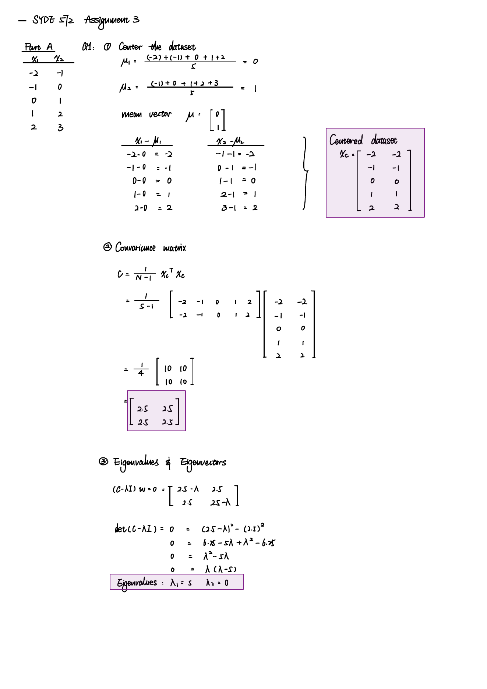
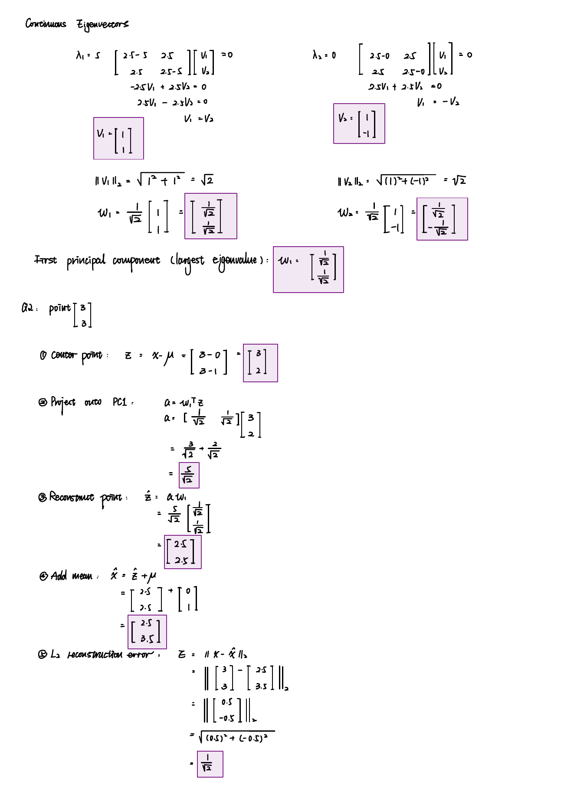
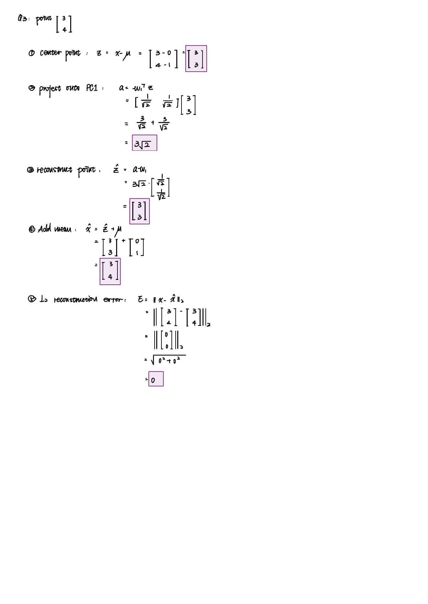
Complete Python source code
The Python scripts are reproduced exactly below, without collapsible sections or inner scrolling. The same .py files are included as downloads in the package.
Part_2.py Part 2 · Original-feature visualizations
import numpy as np
import matplotlib.pyplot as plt
from sklearn.datasets import load_iris
from pathlib import Path
BASE_DIR = Path(__file__).resolve().parent
PLOTS_DIR = BASE_DIR / "plots"
PLOTS_DIR.mkdir(exist_ok=True)
iris = load_iris()
X = iris.data
y = iris.target
feature_names = iris.feature_names
class_names = iris.target_names
print("Dataset shape:", X.shape)
print("Feature names:", feature_names)
print("Class names:", class_names)
plt.figure(figsize=(9, 6))
for i, name in enumerate(class_names):
plt.hist(
X[y == i, 2],
bins=16,
alpha=0.55,
label=name
)
plt.xlabel("Petal Length (cm)")
plt.ylabel("Number of Flowers")
plt.title("1D Iris Visualization: Petal Length")
plt.legend()
plt.grid(alpha=0.3)
plt.tight_layout()
plt.savefig(
PLOTS_DIR / "iris_1d_petal_length.png",
dpi=300
)
plt.show()
plt.figure(figsize=(9, 6))
for i, name in enumerate(class_names):
plt.scatter(
X[y == i, 0],
X[y == i, 1],
label=name,
alpha=0.75
)
plt.xlabel("Sepal Length (cm)")
plt.ylabel("Sepal Width (cm)")
plt.title("2D Iris Visualization: Sepal Features")
plt.legend()
plt.grid(alpha=0.3)
plt.tight_layout()
plt.savefig(
PLOTS_DIR / "iris_2d_sepal.png",
dpi=300
)
plt.show()
plt.figure(figsize=(9, 6))
for i, name in enumerate(class_names):
plt.scatter(
X[y == i, 2],
X[y == i, 3],
label=name,
alpha=0.75
)
plt.xlabel("Petal Length (cm)")
plt.ylabel("Petal Width (cm)")
plt.title("2D Iris Visualization: Petal Features")
plt.legend()
plt.grid(alpha=0.3)
plt.tight_layout()
plt.savefig(
PLOTS_DIR / "iris_2d_petal.png",
dpi=300
)
plt.show()
fig = plt.figure(figsize=(10, 7))
ax = fig.add_subplot(111, projection="3d")
for i, name in enumerate(class_names):
ax.scatter(
X[y == i, 0],
X[y == i, 2],
X[y == i, 3],
label=name,
alpha=0.75
)
ax.set_xlabel("Sepal Length (cm)")
ax.set_ylabel("Petal Length (cm)")
ax.set_zlabel("Petal Width (cm)")
ax.set_title("3D Iris Visualization")
ax.legend()
plt.tight_layout()
plt.savefig(
PLOTS_DIR / "iris_3d.png",
dpi=300,
bbox_inches="tight"
)
plt.show()
Part_3.py Parts 3 & 4 · PCA and data compression
import numpy as np
import matplotlib.pyplot as plt
from sklearn.datasets import load_iris
from sklearn.decomposition import PCA
from pathlib import Path
# --------------------------------------
# Part 3
# --------------------------------------
BASE_DIR = Path(__file__).resolve().parent
PLOTS_DIR = BASE_DIR / "plots"
PLOTS_DIR.mkdir(exist_ok=True)
iris = load_iris()
X = iris.data
y = iris.target
feature_names = iris.feature_names
class_names = iris.target_names
print("Dataset shape:", X.shape)
# Iris has 4 original features.
# PCA automatically centers the data.
# We do not standardize feature variances.
pca = PCA(n_components=4)
# Fit PCA and transform the data
X_pca = pca.fit_transform(X)
print("\nPCA transformed shape:", X_pca.shape)
print("\nPrincipal Component Vectors:")
for i, component in enumerate(pca.components_):
print(f"\nPC{i + 1}:")
for feature, weight in zip(feature_names, component):
print(f" {feature}: {weight:.6f}")
print("\nExplained Variance Ratios:")
for i, ratio in enumerate(pca.explained_variance_ratio_):
print(f"PC{i + 1}: {ratio * 100:.4f}%")
print("\nCumulative Explained Variance:")
cumulative = np.cumsum(pca.explained_variance_ratio_)
for i, ratio in enumerate(cumulative):
print(f"First {i + 1} PCs: {ratio * 100:.4f}%")
plt.figure(figsize=(9, 6))
for i, name in enumerate(class_names):
plt.hist(
X_pca[y == i, 0],
bins=18,
alpha=0.55,
label=name
)
plt.xlabel("First Principal Component (PC1)")
plt.ylabel("Number of Flowers")
plt.title("1D Iris PCA: First Principal Component")
plt.legend()
plt.grid(alpha=0.3)
plt.tight_layout()
plt.savefig(
PLOTS_DIR / "iris_pca_1d.png",
dpi=300
)
plt.show()
plt.figure(figsize=(9, 6))
for i, name in enumerate(class_names):
plt.scatter(
X_pca[y == i, 0],
X_pca[y == i, 1],
label=name,
alpha=0.75
)
plt.xlabel("First Principal Component (PC1)")
plt.ylabel("Second Principal Component (PC2)")
plt.title("2D Iris PCA: First Two Components")
plt.legend()
plt.grid(alpha=0.3)
plt.tight_layout()
plt.savefig(
PLOTS_DIR / "iris_pca_2d.png",
dpi=300
)
plt.show()
fig = plt.figure(figsize=(10, 7))
ax = fig.add_subplot(111, projection="3d")
for i, name in enumerate(class_names):
ax.scatter(
X_pca[y == i, 0],
X_pca[y == i, 1],
X_pca[y == i, 2],
label=name,
alpha=0.75
)
ax.set_xlabel("PC1")
ax.set_ylabel("PC2")
ax.set_zlabel("PC3")
ax.set_title("3D Iris PCA: First Three Components")
ax.legend()
plt.tight_layout()
plt.savefig(
PLOTS_DIR / "iris_pca_3d.png",
dpi=300,
bbox_inches="tight"
)
plt.show()
# --------------------------------------
# Part 4: Data Compression
# --------------------------------------
print("\nPart 4: Data Compression")
ratios = pca.explained_variance_ratio_
cumulative = np.cumsum(ratios)
# Question 1: Variance explained by first 2 PCs
variance_2d = cumulative[1]
print(
f"Variance explained by 2 PCs: "
f"{variance_2d * 100:.4f}%"
)
# Question 2: Minimum PCs to explain 50%
min_components = (
np.searchsorted(cumulative, 0.50) + 1
)
print(
f"Minimum PCs for 50% variance: "
f"{min_components}"
)
# Verify using the Frobenius norm
X_centered = X - pca.mean_
Z_2d = X_pca[:, :2]
frobenius_ratio = (
np.linalg.norm(Z_2d, ord="fro") ** 2
/ np.linalg.norm(X_centered, ord="fro") ** 2
)
print(
f"Frobenius norm verification: "
f"{frobenius_ratio * 100:.4f}%"
)
Part_5.py Part 5 · ISOMAP and PCA comparison
import numpy as np
import matplotlib.pyplot as plt
from sklearn.datasets import load_iris
from sklearn.decomposition import PCA
from sklearn.manifold import Isomap
from sklearn.metrics import silhouette_score
from sklearn.neighbors import kneighbors_graph, KNeighborsClassifier
from sklearn.model_selection import cross_val_score
from scipy.sparse.csgraph import connected_components
from pathlib import Path
BASE_DIR = Path(__file__).resolve().parent
PLOTS_DIR = BASE_DIR / "plots"
PLOTS_DIR.mkdir(exist_ok=True)
iris = load_iris()
X = iris.data
y = iris.target
class_names = iris.target_names
print("Dataset shape:", X.shape)
pca = PCA(n_components=2)
X_pca = pca.fit_transform(X)
pca_variance = sum(
pca.explained_variance_ratio_
)
print(
f"PCA explained variance: "
f"{pca_variance * 100:.4f}%"
)
n_neighbors = 3
isomap = Isomap(
n_neighbors=n_neighbors,
n_components=2
)
X_isomap = isomap.fit_transform(X)
print("ISOMAP shape:", X_isomap.shape)
# Check connectivity of the original
# three-nearest-neighbor graph
graph = kneighbors_graph(
X,
n_neighbors=3,
mode="connectivity",
include_self=False
)
n_graph_components, _ = connected_components(
graph,
directed=False
)
print(
"3-NN graph connected components:",
n_graph_components
)
# Silhouette score uses species labels only
# for evaluation, not for fitting PCA/ISOMAP.
pca_score = silhouette_score(X_pca, y)
isomap_score = silhouette_score(X_isomap, y)
print(f"PCA silhouette score: {pca_score:.6f}")
print(f"ISOMAP silhouette score: {isomap_score:.6f}")
# Which species fall in each connected component of the 3-NN graph
_, comp_labels = connected_components(graph, directed=False)
for c in range(n_graph_components):
counts = np.bincount(y[comp_labels == c], minlength=3)
print(
f"Component {c}: "
+ ", ".join(f"{n}={k}" for n, k in zip(class_names, counts))
)
# Classification check: 10-fold CV accuracy of a 5-NN classifier
# trained on each 2D embedding (labels are not used to fit PCA/ISOMAP).
knn = KNeighborsClassifier(n_neighbors=5)
pca_acc = cross_val_score(knn, X_pca, y, cv=10).mean()
isomap_acc = cross_val_score(knn, X_isomap, y, cv=10).mean()
print(f"PCA 5-NN CV accuracy: {pca_acc * 100:.2f}%")
print(f"ISOMAP 5-NN CV accuracy: {isomap_acc * 100:.2f}%")
plt.figure(figsize=(9, 6))
for i, name in enumerate(class_names):
plt.scatter(
X_isomap[y == i, 0],
X_isomap[y == i, 1],
label=name,
alpha=0.75
)
plt.xlabel("ISOMAP Component 1")
plt.ylabel("ISOMAP Component 2")
plt.title("Iris ISOMAP: 3 Nearest Neighbors")
plt.legend()
plt.grid(alpha=0.3)
plt.tight_layout()
plt.savefig(
PLOTS_DIR / "iris_isomap_3nn.png",
dpi=300,
bbox_inches="tight"
)
plt.show()
fig, axes = plt.subplots(
1, 2, figsize=(14, 6)
)
for i, name in enumerate(class_names):
axes[0].scatter(
X_pca[y == i, 0],
X_pca[y == i, 1],
label=name,
alpha=0.75
)
axes[1].scatter(
X_isomap[y == i, 0],
X_isomap[y == i, 1],
label=name,
alpha=0.75
)
axes[0].set_title("PCA (2D)")
axes[0].set_xlabel("PC1")
axes[0].set_ylabel("PC2")
axes[1].set_title("ISOMAP (2D, k=3)")
axes[1].set_xlabel("ISOMAP Component 1")
axes[1].set_ylabel("ISOMAP Component 2")
for ax in axes:
ax.legend()
ax.grid(alpha=0.3)
plt.tight_layout()
plt.savefig(
PLOTS_DIR / "iris_pca_vs_isomap.png",
dpi=300,
bbox_inches="tight"
)
plt.show()